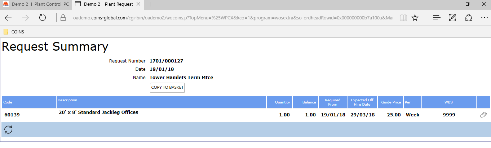

The Previous Requests screen shows details of
Name shows the site name.
Status shows the status of the request. This could be:
| Approved | The request has been accepted and is being dealt with by the |
| Awaiting Approval | An approval workflow is being used and the request has not yet been approved. |
| Approval Rejected | An approval workflow is being used and the request has been rejected. |
| Returned from | The entire request has been passed back from the |

This adds the items from the request to your basket, with a default Required From date of tomorrow, and a default Expected